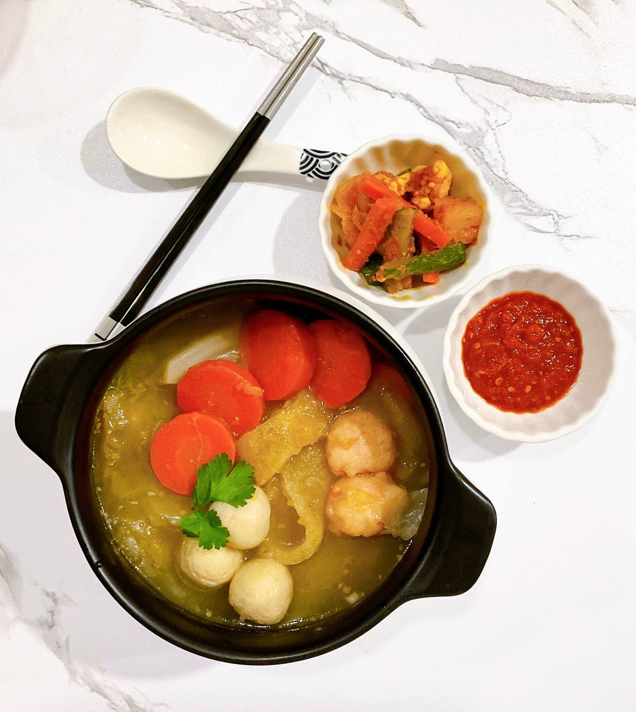

Hee Peow Soup

Description
Collagen-rich fish maw soup hat will nourish your skin and leave you feeling like a million bucks. A homely and comforting dish to warm the cockles of your heart.
Ingredients
- Fish maw
- Chicken stock(store-bought or home-made
- Carrot
- Cabbage
- Prawn ball
- Meat ball
- Fried garlic
- Coriander
Steps
- Rinse fish maw with hot water to soften
- In a pot, add fish maw to chicken stock and boil till soft.
- Add cabbage and carrot into stock.
- Before serving, add prawn ball and pork ball.
- Serve immediately by topping off with fried garlic and coriander.